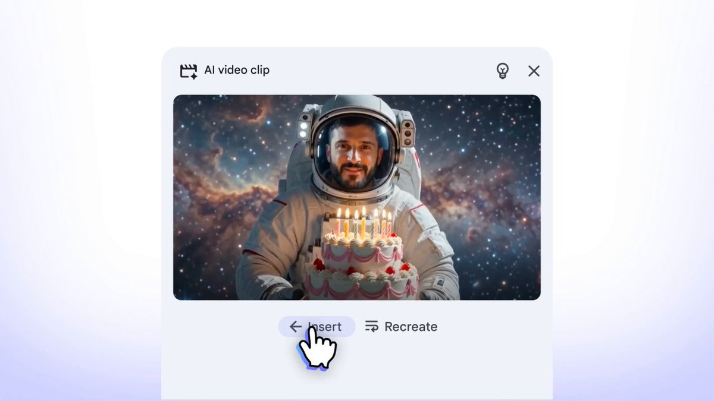
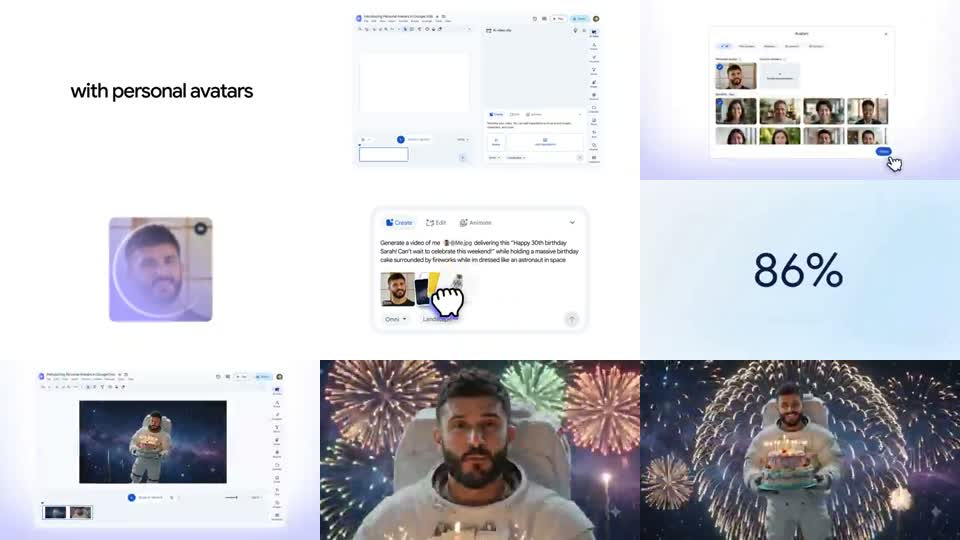
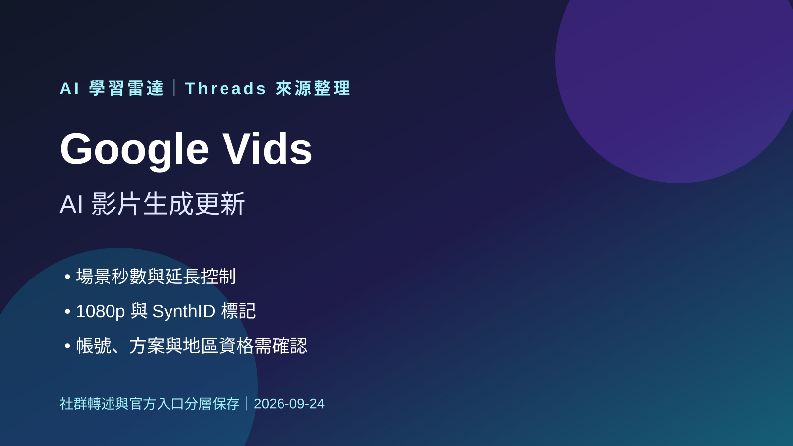

Kufu｜Google Vids 個人 AI 分身正式導入：Gemini Omni Flash、Personal Avatars 與 SynthID

一句話摘要
這則 Kufu Threads 把 Google Workspace 官方更新翻成可用的創作者語言：Google Vids 不只是影片剪輯器，而是開始支援「輸入腳本 → 由你的 personal AI avatar 出鏡」的數位分身影片工作流。
社群貼文說了什麼
Kufu 原文重點：
- Google 正式把 Gemini Omni Flash 導入 Google Vids。
- 使用者可建立外貌與聲音接近自己的個人 AI 分身。
- 輸入腳本後，數位版自己可負責說話與演出。
- 可用於社群短片、產品介紹、客戶歡迎影片或工作更新。
- Gemini Omni 也能用文字指令修改既有影片，例如背景、光線、風格與特效。
- 功能陸續開放給 Google AI Pro、Ultra 與符合資格的 Workspace 用戶；個人分身有 18 歲、地區、帳戶本人外貌與 SynthID 等限制。
官方查核
Google Workspace 官方 X 寫明：Gemini Omni in Google Vids lets you generate a personal AI avatar to star in your videos；type a script, and let your digital twin handle the rest。
Google Workspace Blog〈Gemini Omni Flash now available in Google Vids〉確認：
- Gemini Omni Flash in Google Vids 可用 simple text prompts 編輯影片。
- 可 generate new video clips with personal avatars that look and sound like you。
- Personal avatars access limited to users 18 years of age or older，且 primary language preference 需為 English。
- 每支 Gemini Omni 生成影片會加入 imperceptible SynthID digital watermark。
- Workspace admins 可管理此功能存取。
Workspace Updates 另列出可用版本：Business / Enterprise / Education / Nonprofits / Google AI Pro / Ultra 等符合資格方案，但實際上線仍依帳號、地區與 rollout。
影片畫面觀察

官方 X 影片的 contact sheet 可見：
- 「with personal avatars」標語。
- Google Vids 編輯介面與 avatar 選擇器。
- 使用者頭像掃描 / 建立過程。
- Prompt 範例：要求生成生日祝福影片。
- 輸出結果是太空人拿生日蛋糕、背景有煙火的 AI video clip。
- 插入 / recreate 等 Vids 介面按鈕。
對創作者與課程的價值
這則值得接在既有 Gemini Omni Avatar 與 Google Vids 工作流後面，因為它把「能不能做數位分身」推進到「Google Workspace / Vids 正式產品化」：
- 個人品牌可用同一 avatar 製作課程更新、社群短片與產品說明。
- 企業內訓可快速產出一致講者形象，不必每次安排拍攝。
- 客服/導覽影片可依腳本快速產生版本，但仍需人工審稿。
- 對 AI 課程來說，可用來講「影片生成 + 個人資料治理 + SynthID」的完整案例。
2026-09-24 補充：從分身功能走向場景控制，但不等於全面免費

Kufu 的新 Threads 串文轉述 Google Vids 增加的創作控制：可指定片段的精確秒數、延長既有場景、嘗試 1080p 輸出，並延續角色、光線與環境等視覺元素；貼文也重申 Gemini Omni 產出的內容會帶有不可見 SynthID 標記。它另稱文字轉語音與超過 100 種語言旁白「即將推出」，但未給出確切日期。
可直接確認的是 `vids.new` 會導向 Google Vids 的 Google 帳戶登入入口；在未登入狀態下，無法確認個別帳號是否具備此串文列出的生成資格、方案額度、地區可用性或 1080p 設定。原串文所連的 Google Workspace X 貼文，此次瀏覽器未能讀取。因此「所有 Google 帳號皆可免費使用 Omni 1.1 生成 1080p」應保存為社群轉述，不能視為普遍且無條件的官方承諾。
實作上，將 Vids 視為「生成素材與組裝」的一段流程較安全：先以短場景驗證角色與風格連續性，再組進時間軸；對外發布前仍應檢查腳本、肖像／素材授權、旁白語言品質與帳號方案限制。
風險與限制
- Personal avatar 是肖像與聲音資料，必須本人同意與帳戶綁定；不可拿他人素材冒充。
- 官方限制 English、18+、地區與方案，不能把社群說法解讀成所有 Gmail 帳號立即可用。
- SynthID 是透明度工具，不等於完整防偽或完整授權保證。
- 商業用途仍需確認 Google Vids / Workspace / Gemini 的使用條款、素材授權與公司資安政策。
- 對外發布時建議標示 AI 生成或 AI avatar 參與。
來源
- Kufu Threads：https://www.threads.com/@kufutw/post/Dbct44JnTPJ
- Google Workspace X：https://x.com/GoogleWorkspace/status/2082874613449519349
- Google Workspace Blog：https://workspace.google.com/blog/product-announcements/introducing-gemini-omni-flash-in-google-vids
- Workspace Updates：https://workspaceupdates.googleblog.com/2026/07/cast-yourself-in-ai-video-clips-using-your-personal-avatar-with-Gemini-Omni-in-Vids.html
- Google Vids AI Avatars：https://workspace.google.com/products/vids/ai-avatars/